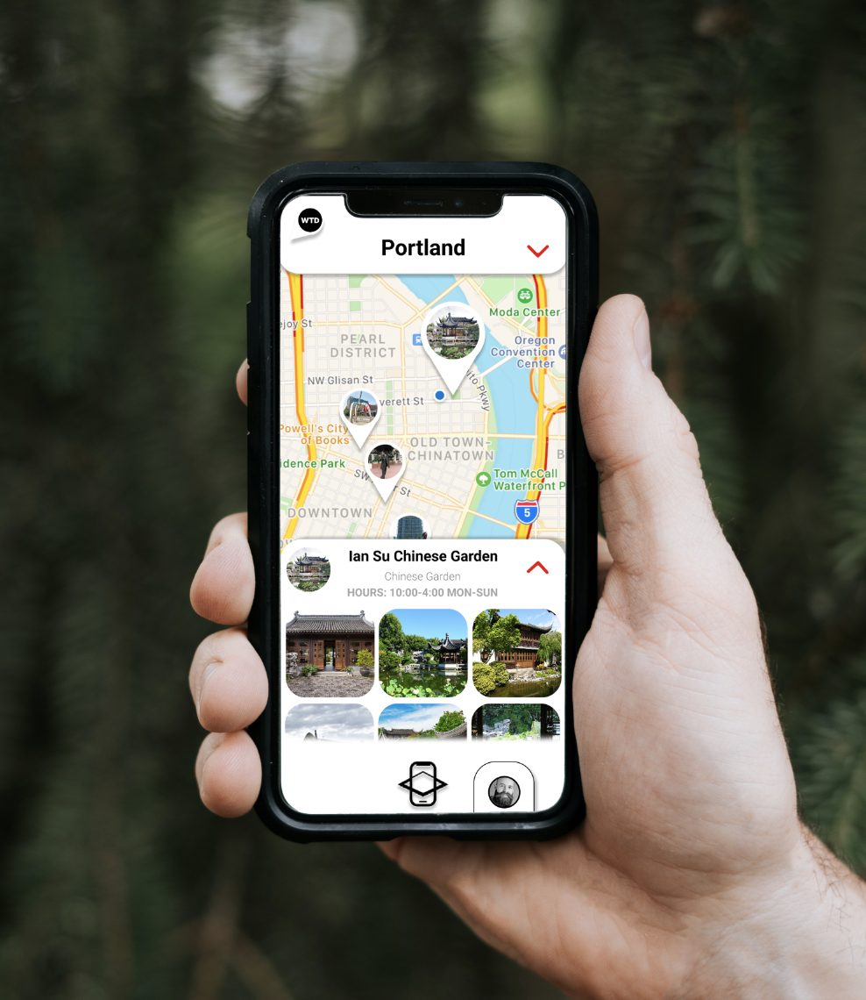
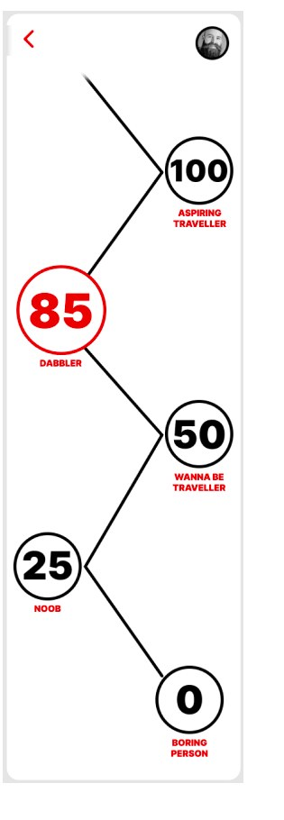
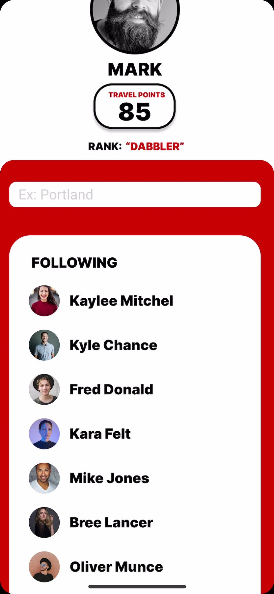

A product catalog that became a map.
A semester brief asked for a mobile app built around an interactive product catalog. I made a travel catalog for finding things to do in a city.
- Role
- Product design, UX and UI
- Year
- 2022
- Scope
- Mobile app concept, brand
- Status
- Coursework


The brief
For our project this semester we were tasked with creating a mobile phone app built around an interactive product catalog. I decided to make mine a travel catalog: an app that lets people easily discover activities they can do in a city. I called it What To Do.
The audience I kept in mind throughout was people of all ages who love to travel, who travel casually, or who want to be travellers.
Colour and the first screen
I started with colour. I wanted something powerful that caught attention, but I did not want a lot of colours, because I was planning to use a lot of imagery throughout the app and needed it to sit against photography without fighting it. I went with red, specifically D70000.
Then the landing page. What does someone see the moment they open this? I wanted the experience simple, and I wanted them to find what they were looking for easily. The app name, a search bar for a location, and a continue button. Next to it a discover button, for the people who do not have a city in mind yet and want a list of recommendations to choose from.
Why a map, not a list
Once someone picks a city, they choose from categories based on popular activities there: food, kayaking, hiking, sightseeing and other. I used photographs as the buttons, so the design is better looking and people get a glimpse of what the activity actually looks like in that city.
At first I wanted the activities themselves to be a list in alphabetical order. I decided against it, because it would have been boring and not very interactive. I went with a map instead. It fits the brand better, it makes the app more interactive, and it creates a sense of discovery and travel. A map seemed like the best way to accomplish that.
Tapping a location slides a panel up from the bottom with the name, hours, what kind of place it is and some photos. From there you can drop back to the full map or open the location's own page.
The location page
I wanted this page bright, full of pictures, and enough to make someone want to scroll through the photos and learn about the place they chose.
Along the top are Done and To Do List checkboxes that get added to the profile page, a phone icon to call the location with questions, and a reservation icon to book digitally. Reviews sit at the bottom.
Scrolling a little further reveals a VR link that takes you to a full 360 degree view of the location. I included it because I have always wanted that option before I go somewhere: to see whether I like the vibe, and decide from there whether I want to go at all.
Travel points
The travel points were the part I was most excited about. Tapping the points on your profile opens a rank tree, and you can see how many points you have, what rank that makes you, and how many more you need to move up.
The ranks run from Boring Person at zero, through Noob, Wanna Be Traveller and Dabbler, up to Aspiring Traveller at one hundred. I wanted to make the app a little more interactive and give it a game like feel. People love to get points and feel a sense of progression, and this captures that.
The bucket list works on the same instinct. Locations and activities, split between what you have done and what you have not. People love lists and love marking things off them. It makes them feel in control and successful.
What I took from it
It was a challenge and unlike anything I had made before. The thing I learned that semester is that less is more. Sometimes it is fine not to have much on a page, and keeping things simple is what makes them powerful. I tried to apply that to the landing page. I did not want anyone to feel overwhelmed the first time they opened the app, I wanted them comfortable and stress free.
I also learned that a catalog can be almost anything where there is a list or a display, which made this fun to build. I got to make lists in unusual ways, with pictures, or as a group of locations on a map. It made me think outside the box a little.
The full write-up, with every screen, is on Medium: Travel Catalog.

